2010年10月3日(日)
目覚めは船の上で…。フィンランドへ向かうシリヤラインは午前中にヘルシンキに到着し、それからはフィンランド観光になります。
しかし北欧の日曜日はお店はどこもお休み。買い物などは翌日に回し、この日はヘルシンキ郊外のヌークシオ国立公園へ足を延ばしてみました。
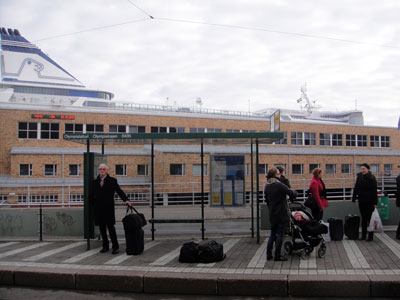
シリヤラインは１時間遅れでヘルシンキに到着。
オリンピア・ターミナルからトラム（路面電車）で
ホテル方面へ移動します。
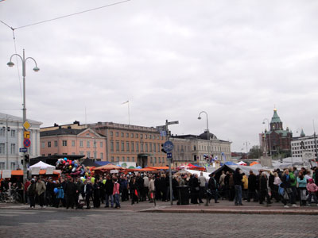
ホテルで荷物を置いた後、
まずは近くの市場へ寄ってみました。
すごい人の数・・・。
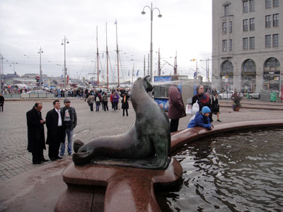
市場近くの公園の噴水にて。
アザラシが口から豪快に水を吹いています(笑)。
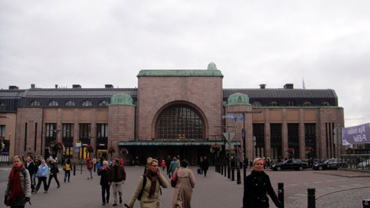
ヘルシンキ中央駅もやはり立派です。
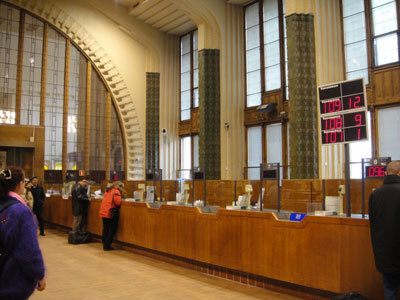
券売機で切符を買おうとしたら案内がフィンランド語のみ…。
（しかもなぜかほとんどの台が発売中止状態だった）
買い方が分からないので、切符は窓口で買うことにしました。
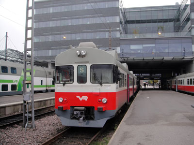
始発駅に電車がたくさん停まっていると
なんだかわくわくしてきますね。
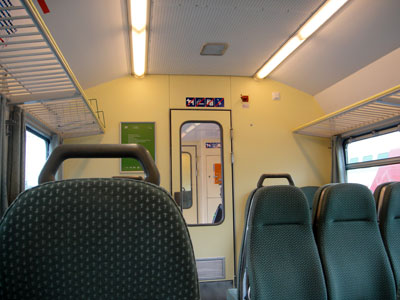
乗車した近郊電車の車内はこんな感じ。
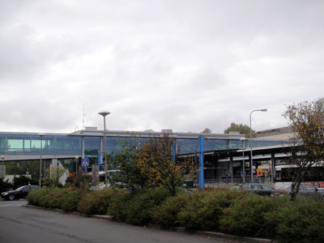
電車で約２５分、エスポー駅に到着。
切符はチェックも回収もされませんでした。
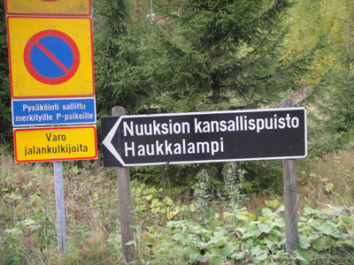
エスポー駅からバスに30分ほど乗って、
ヌークシオンパー（ヌークシオ国立公園前）に到着。
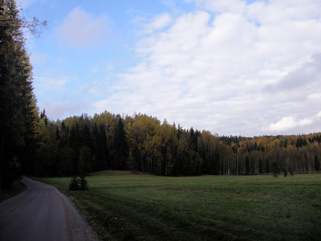
バス停から国立公園の入口まで徒歩で約２キロ・・・。
森に囲まれた道をとぼとぼ歩きました。
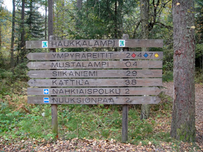
公園内で道に迷わないか心配でしたが、
案内板がたくさんあって安心。
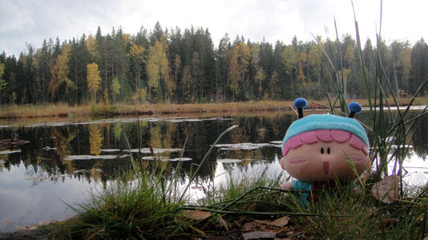
まさに森と湖の国・フィンランド！
ムルモさんも森林浴を楽しんでいます。
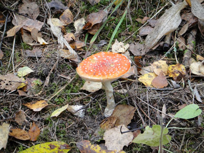
あちこちでキノコが生えていましたが、
こんな毒キノコもあるので要注意。

再びヘルシンキ中央駅に戻ってきました。
この電車の並びの光景は阪急梅田駅みたい・・・！？
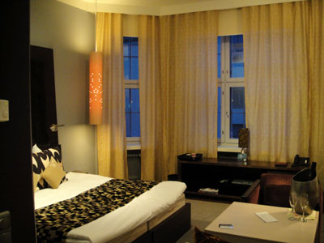
宿泊するホテル・クラウスKにチェックインしました。
今回の旅行で一番豪華なホテルかも。
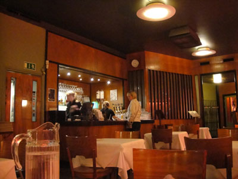
夕食はレストラン・シーホースで食べました。
ミートボールとトナカイの肉が美味しかった！
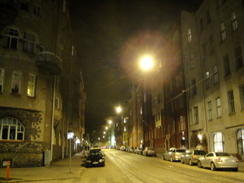
夜のヘルシンキは人がやたらと少なかったです。
2010年10月4日(月)
いよいよ観光最終日(T-T)。最終日らしく、のんびりとヘルシンキ市内の観光とおみやげ購入を行いました。この日が一番たくさん歩いたかも。そして街のいたるところで日本人を見たような気がします。
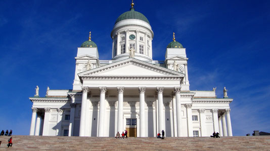
ヘルシンキ大聖堂です。
とにかくでかい！
まるで人がアリのようです。
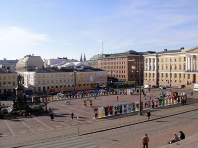
大聖堂の階段上ったところから眺めた
元老院広場です。
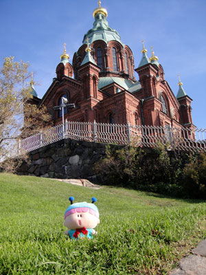
ウスペンスキ寺院にも行きました。
ここから楽しい買い物タイムになります♪
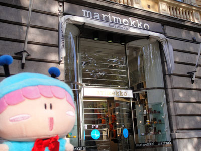
フィンランドで一番有名なのがマリメッコでしょうか。
自分と家族のおみやげをここで買いまくりました。
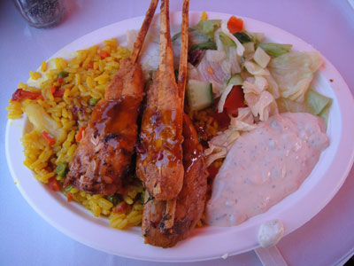
お昼は市場でパエリアを食べました。
市場らしいB級な味がなかなかGood！
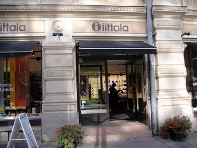
再び買い物～。
ガラス製品を扱うイッタラもフィンランドでは有名なのです。

おやつその１。
カフェ・カール・ファッツェルにてチーズケーキ♪
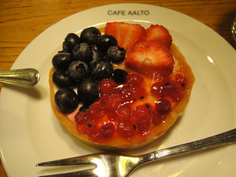
おやつその２。
カフェ・アアルトで３種ベリーのタルトを♪
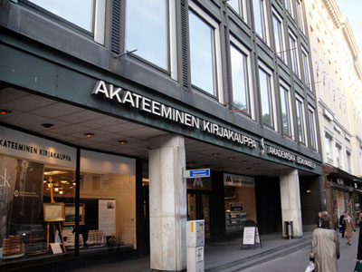
ヘルシンキで一番大きな書店・アカデミア書店。
フィンランド版のアニメ雑誌を買いました。
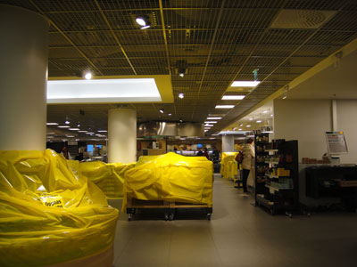
スーパーマーケット・ストックマンの食品売り場にて。
営業時間中にもかかわらず、なぜか黄色いビニールシートで
覆われているものが気になる…。
写真をすっかり撮り忘れてしまいましたが、この後はフィンランド料理を扱うレストランへ行きました。メニューに英語表記が無かったので、運任せで注文するというミステリー料理に！（でも美味しかったです）
2010年10月5日(火)
楽しかった旅行もいよいよ終わりを告げ、お昼の飛行機でフィンランドから飛び立ちます。途中コペンハーゲンを経由して成田空港へ。時差で時間が８時間進むので、日本に着くのは10月6日の朝になります。
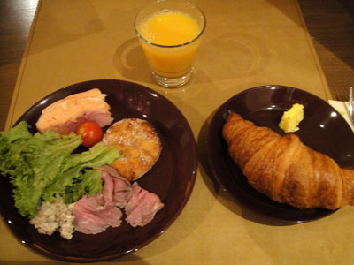
最後の朝食です。
毎日食べてるものが一緒(^^;。
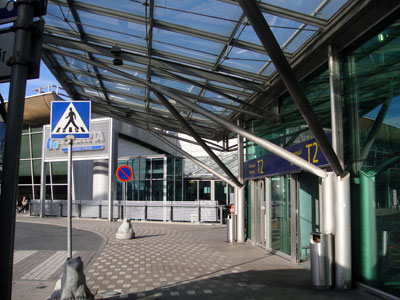
ヘルシンキ・ヴァンター空港に到着！
本当はターミナル１へ行くはずなのに、
間違えてターミナル２へ来てしまった。。
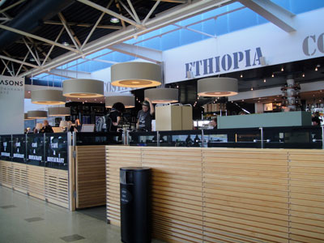
飛行機に乗るまでコーヒーブレイクを。
そして・・・。
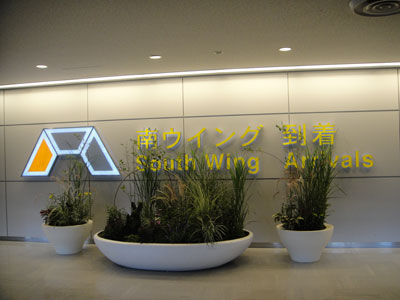
無事に成田空港に帰ってきました～。
ホッとしたのか、帰りのバスはずっと爆睡でしたzzz。
終わってみればトラブルらしいトラブルの無い恵まれた旅行となりました。
海外旅行は準備から旅行まで、国内旅行では味わえないいろんな経験が出来ますね。
これほど長い期間で海外旅行をすることはこれから先当分無さそうですが、また機会を見つけて、今度は違う国へも行ってみたいです。
長々としたレポートをご覧いただき、ありがとうございました！
(2010/10/10)